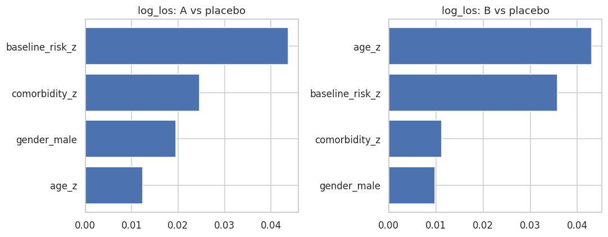

A Boosted Multi-Arm Causal Model estimates heterogeneous treatment effects (HTE) in settings with more than two treatment options — for example, a placebo arm alongside two or more active interventions. Rather than fitting a single causal model across all arms simultaneously, it adopts a T-learner strategy: one outcome model per arm, each capturing the arm-specific relationship between covariates and outcomes. Treatment effects are then recovered as contrasts between arm predictions, relative to a chosen baseline.
The “boosted” label refers to the learner: each contrast is a boosted X-learner (CXGBoost). That brings XGBoost’s tabular strengths — nonlinear interactions, robustness to irrelevant features, and stable fits on moderate samples — to each arm contrast.
This approach trades off some efficiency (arm models share no parameters) for simplicity and flexibility: it makes no assumptions about how treatment effects relate across arms, and each arm model can be tuned independently.
When to Use It
The Boosted Multi-Arm Causal Model is appropriate when:
There are \(K \geq 3\) treatment conditions (including control/placebo), and binary causal forest methods do not apply directly.
The relationship between covariates and outcomes is likely nonlinear or involves interactions that regression-based methods would miss.
The primary goal is individual-level treatment effect estimation — identifying which arm benefits which subgroup — rather than population-average inference.
Observational data requires covariate adjustment, and a binary treatment model does not match the design.
Typical applications include clinical trials comparing multiple drug regimens against placebo, policy evaluations with several intervention variants, and marketing experiments with multiple campaign conditions.
Key Concepts
T-learner. The T-learner (or “treatment-specific learner”) fits a separate outcome model for each arm \(k\):
\[\hat{\mu}_k(x) \approx E[Y \mid X = x,\, W = k], \qquad k = 0, 1, \ldots, K-1\]
where arm \(k = b\) (typically \(k = 0\), placebo or control) serves as the baseline. Each model is trained only on units assigned to arm \(k\), so the models are entirely independent of one another.
Treatment contrasts. The conditional average treatment effect (CATE) for arm \(k\) relative to baseline \(b\) is:
For \(K\) arms, this yields \(K - 1\) contrast surfaces over the covariate space. For example, with arms \(\{\)placebo, drug A, drug B\(\}\), the model returns \(\hat{\tau}_{A \leftarrow \text{placebo}}(x)\) and \(\hat{\tau}_{B \leftarrow \text{placebo}}(x)\) for each individual.
Pairwise contrasts. Any two non-baseline arms can also be compared directly:
This is straightforward since all \(\hat{\mu}_k\) are defined over the full covariate space.
Propensity scores. A multiclass propensity model estimates \(\hat{e}_k(x) = P(W = k \mid X = x)\) for all arms jointly, typically using a probability forest or multinomial model. These propensity scores are not incorporated into the outcome model training (the approach is not doubly robust), but serve three diagnostic purposes: detecting covariate imbalance across arms, flagging low-overlap regions where counterfactual predictions are unreliable, and enabling inverse probability weighting (IPW) for population-level ATE estimation if needed.
Identification assumptions. Like all observational causal methods, the T-learner requires:
Consistency — the observed outcome for a unit assigned to arm \(k\) equals its potential outcome \(Y(k)\).
Ignorability — conditional on \(X\), treatment assignment is independent of potential outcomes: \(W \perp (Y(0), \ldots, Y(K-1)) \mid X\). There must be no unmeasured confounders.
Overlap — every unit has a non-zero probability of receiving any arm: \(P(W = k \mid X = x) > 0\) for all \(k\) and all \(x\) in the support.
Known Limitations
T-learner bias in small arms. When one arm has few observations, its outcome model is poorly estimated, which degrades the contrast estimates for that arm disproportionately. S-learner or X-learner variants can partially mitigate this by sharing information across arms.
No regularization toward a common effect. Unlike the Multi-Arm/Multi-Outcome Causal Forest (which uses a joint splitting criterion), T-learner arm models are fully independent. If treatment effects are genuinely similar across arms, a joint model would be more efficient.
Not doubly robust. Propensity scores are estimated but not used in the outcome model training. Misspecification of \(\hat{\mu}_k\) is not corrected by a well-estimated propensity model.
Extrapolation risk. Each \(\hat{\mu}_k\) must produce predictions for all units regardless of arm assignment — including covariate regions where that arm had few or no training observations. Low-propensity regions should be interpreted cautiously.
Pipeline: Five Steps
Boosted multi-arm causal model
A few things worth emphasizing from the pipeline:
Step 2 extrapolation is the central challenge. Each arm model is trained on only the units assigned to that arm, but must predict \(\hat{\mu}_k(x)\) for every unit in the dataset — including those from other arms. In regions of covariate space where arm \(k\) is rare (low propensity), the model is extrapolating from very little data. The propensity scores in step 4 directly diagnose this risk: wherever \(\hat{e}_k(x)\) is near zero, the corresponding \(\hat{\mu}_k(x)\) estimates should be treated with caution.
Step 3’s “best arm” output is operationally the most useful in personalized treatment settings. For each individual, the model returns \(\text{argmax}_k\, \hat{\tau}_{k \leftarrow b}(x)\), identifying which arm delivers the largest estimated benefit. This is the basis for individualized treatment rules (ITRs) — policies that assign different arms to different subgroups based on predicted effect heterogeneity. That said, uncertainty around CATE estimates should be factored in before acting on these assignments; small margin differences between arms may not be reliable.
Step 4 propensity scores serve three distinct roles that are worth keeping separate: (1) diagnostics — visualizing covariate overlap across arms to identify extrapolation risk; (2) ATE correction — IPW-adjusted averages account for non-random arm assignment in observational data; and (3) sensitivity analysis — comparing naive and propensity-weighted ATEs reveals how sensitive conclusions are to the observational design.
Implementation in Python
MultiArmCausalBoost in PyCausalML fits one boosted contrast model per non-baseline arm. The implementation is designed for flexibility and interpretability, with the following features:
Outcome models: one CXGBoost model per contrast against the baseline.
Propensity model: a logistic regression inside each contrast model, used to combine the arm-specific effect estimates.
Prediction output: predict(X) returns one contrast column per non-baseline arm.
Setup
This notebook fits MultiArmCausalBoost from PyCausalML (pycausalml.tree_based_models).
fit(X, treatment, y) returns the fitted estimator. predict returns a NumPy array of conditional average treatment effects. A fitted model also exposes explain and plot_shap.
Install the package from this repository, with the plotting and boosting extras.
The three-arm example is built with make_patient_multiarm from Data/patients.csv, the same design as the multi-arm causal forest tutorial. One boosted model is fit for each outcome. Arm labels are coded placebo=0, A=1, B=2, and the baseline arm is 0.
Code
import subprocessimport sysfrom pathlib import Pathdef _repo_root() -> Path: here = Path.cwd().resolve()for cand in [here, *here.parents]:if (cand /"pyproject.toml").is_file() and (cand /"src"/"pycausalml").is_dir():return candraiseFileNotFoundError("PyCausalML repository was not found. Run this notebook from the repository." )root = _repo_root()subprocess.check_call([ sys.executable, "-m", "pip", "install", "-q", "-e", f"{root}[plot,boost,shap]", "statsmodels",])print("PyCausalML ready.")
PyCausalML ready.
Code
%matplotlib inlineimport matplotlib.pyplot as pltimport numpy as npimport pandas as pdimport seaborn as snsfrom pycausalml import ( MultiArmCausalBoost, explain_cate,)import sysfrom pathlib import Pathdef _add_methods_path(): here = Path.cwd().resolve()for cand in [here, *here.parents]:for rel in ( Path("causal_tree_methods.py"), Path("Tutorials") /"05_01_Tree_Based_Models"/"causal_tree_methods.py", Path("Notebook") /"05_01_Tree_Based_Models"/"causal_tree_methods.py", ): path = cand / relif path.is_file(): sys.path.insert(0, str(path.parent))returnraiseFileNotFoundError("causal_tree_methods.py was not found")_add_methods_path()from causal_tree_methods import ( make_patient_multiarm,)def find_repo_root(start=None) -> Path: here = Path(start or Path.cwd()).resolve()for cand in [here, *here.parents]:if (cand /"Data").is_dir() and (cand /"Image").is_dir():return candraiseFileNotFoundError("Could not find a folder containing Data/ and Image/.")def data_path(filename: str) -> Path:return find_repo_root() /"Data"/ filenamesns.set_theme(style="whitegrid")plt.rcParams["figure.dpi"] =110print("Imported PyCausalML")
Imported PyCausalML
Prepare the patient dataset
The example is built from Data/patients.csv: real age, comorbidity, baseline risk, and sex, a simulated three-arm treatment (placebo, A, B), observed log length of stay, and a simulated binary clinical response that improves under A and more so under B.
make_patient_multiarm builds that design from Data/patients.csv:
Draws a three-level treatment (placebo, A, B) with probabilities 40%, 30%, and 30%.
Keeps observed log length of stay (log_los) as the first outcome. Treatment is randomized, so its effect on length of stay is null.
Simulates a binary clinical response that is higher under arm A and higher still under arm B.
placebo 641
A 498
B 461
Name: count, dtype: int64
outcomes ['log_los', 'response']
covariates ['age_z', 'comorbidity_z', 'baseline_risk_z', 'gender_male']
Train MultiArmCausalBoost on log_los and response
MultiArmCausalBoost fits one boosted contrast per non-baseline arm. This notebook fits a separate model for each outcome, log_los and response.
one CXGBoost contrast against placebo for arm A, and one for arm B
a logistic propensity model inside each contrast, used only to combine that contrast’s effect estimates
Key choices you control:
baseline: the reference arm for contrasts (placebo, coded as 0)
learner: "xgb" for XGBoost or "gbr" for gradient boosting
n_estimators: boosting rounds (kept moderate for tutorial runtime)
Code
ARM = {"placebo": 0, "A": 1, "B": 2}CONTRAST = {1: "A - placebo", 2: "B - placebo"}W_code = np.array([ARM[str(a)] for a in W_train])model_los = MultiArmCausalBoost(baseline=0, n_estimators=40, learner="xgb", random_state=1)model_resp = MultiArmCausalBoost(baseline=0, n_estimators=40, learner="xgb", random_state=2)model_los.fit(X_train, W_code, Y_train[:, 0], feature_names=feature_names)model_resp.fit(X_train, W_code, Y_train[:, 1], feature_names=feature_names)print("contrasts", [CONTRAST[int(arm)] for arm in model_los.arms_])print("mean training CATE, log_los", np.round(model_los.predict(X_train).mean(axis=0), 3))print("mean training CATE, response", np.round(model_resp.predict(X_train).mean(axis=0), 3))
contrasts ['A - placebo', 'B - placebo']
mean training CATE, log_los [0.046 0.1 ]
mean training CATE, response [0.107 0.214]
Predict contrasts on the test set
predict(X) returns a numeric array with one column per non-baseline arm, in the order stored on arms_. Each column is the conditional contrast against placebo. Propensity scores stay on each contrast model’s propensity_ attribute; they are not part of the prediction array.
Code
tau_hat_log_los = np.asarray(model_los.predict(X_test))tau_hat_response = np.asarray(model_resp.predict(X_test))columns = [CONTRAST[int(arm)] for arm in model_los.arms_]print("log length of stay")print(pd.DataFrame(tau_hat_log_los, columns=columns).head())print("clinical response")print(pd.DataFrame(tau_hat_response, columns=columns).head())
log length of stay
A - placebo B - placebo
0 0.035568 0.124001
1 0.005817 -0.013249
2 0.037126 0.008549
3 -0.027519 0.151351
4 -0.047768 0.152438
clinical response
A - placebo B - placebo
0 0.070772 0.335861
1 0.055840 0.125987
2 0.160307 0.266076
3 0.077687 0.174736
4 0.114828 0.137205
Average predicted contrasts on the training set
These averages are the mean of predict(X) on the training rows. They are model-implied contrasts against placebo, not a doubly robust score. Treatment in this example is randomized, so the mean contrast is a direct summary of the fitted surface.
Code
print("Mean training contrast, log_los")print(pd.Series(model_los.predict(X_train).mean(axis=0), index=columns).round(3))print("Mean training contrast, response")print(pd.Series(model_resp.predict(X_train).mean(axis=0), index=columns).round(3))
Mean training contrast, log_los
A - placebo 0.046
B - placebo 0.100
dtype: float64
Mean training contrast, response
A - placebo 0.107
B - placebo 0.214
dtype: float64
Summarize average (model-implied) contrasts on the test set
The test-set table is the average of the predicted individual contrasts for log_los and response.
models_ holds one fitted CXGBoost per non-baseline arm. The first entry is the A-versus-placebo contrast.
Code
print(model_los.models_[0])
<pycausalml.tree_based_models.estimators.CXGBoost object at 0x74e561f4ea50>
SHAP values for the predicted contrasts
These plots explain the predicted log-length-of-stay contrasts against placebo. explain_cate uses a subsample of the test rows so the permutation explainer stays small.
Code
class _Contrast:def__init__(self, model, column):self.model = modelself.column = columnself.feature_names_ = feature_namesdef predict(self, new_x):return np.asarray(self.model.predict(new_x))[:, self.column]sv_A = explain_cate(_Contrast(model_los, 0), X_test, feature_names=feature_names, max_samples=30, random_state=1)sv_B = explain_cate(_Contrast(model_los, 1), X_test, feature_names=feature_names, max_samples=30, random_state=1)fig, axes = plt.subplots(1, 2, figsize=(10, 4))for ax, sv, title in ( (axes[0], sv_A, "log_los: A vs placebo"), (axes[1], sv_B, "log_los: B vs placebo"),): order = np.argsort(sv.importance()) ax.barh(np.array(feature_names)[order], sv.importance()[order], color="#4C72B0") ax.set_title(title)fig.tight_layout()plt.show()

Save and load a fitted model
The fitted object can be written and read with pickle.
Code
import pickletmp_path = Path("multi_arm_causal_boost_demo.pkl")with tmp_path.open("wb") as handle: pickle.dump(model_los, handle)with tmp_path.open("rb") as handle: model2 = pickle.load(handle)print(np.round(model2.predict(X_test[:5]), 3))tmp_path.unlink()
Each contrast is a boosted X-learner against placebo, fit only on the baseline arm and that arm.
Propensity scores are used inside each contrast. The averages above are means of predicted contrasts, not a doubly robust score.
Each arm needs enough rows, because that arm’s outcome model is trained only on units assigned to it.
The two outcomes are fit separately. The models do not share an outcome-correlation structure.
SHAP explains the predicted contrast. That is the structural effect only when the identification assumptions hold.
Summary
This tutorial fit MultiArmCausalBoost on the three-arm design built from Data/patients.csv:
one model for log_los and one for response
contrasts of arms A and B against placebo
average predicted contrasts, covariate importance, and SHAP explanations of those contrasts
Resources
Künzel, S. R., Sekhon, J. S., Bickel, P. J., & Yu, B. (2019). Metalearners for estimating heterogeneous treatment effects using machine learning. PNAS.